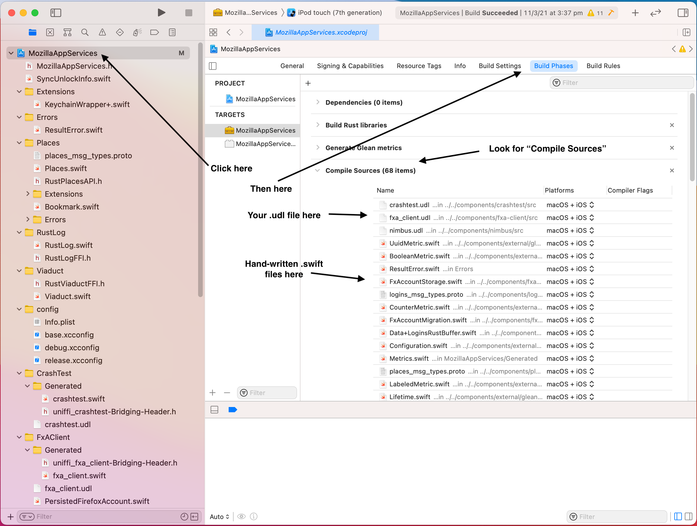

Adding a new component to Application Services
This is a rapid-fire list for adding a component from scratch and generating Kotlin/Swift bindings.
The Rust Code
Your component should live under ./components in this repo.
Use cargo new --lib ./components/<your_crate_name>to create a new library crate.
See the Guide to Building a Rust Component for general advice on designing and structuring the actual Rust code, and follow the Dependency Management Guidelines if your crate introduces any new dependencies.
Use UniFFI to define how your crate's
API will get exposed to foreign-language bindings. Place the following in your Cargo.toml:
[dependencies]
uniffi = { workspace = true }
New components should prefer using the
proc-macro approach rather than
a UDL file based approach. If you do use a UDL file, add this to Cargo.toml as well.
[build-dependencies]
uniffi = { workspace = true }
Include your new crate in the application-services workspace, by adding
it to the members and default-members lists in the Cargo.toml at
the root of the repository.
Run cargo check -p <your_crate_name> in the repository root to confirm that
things are configured properly. This will also have the side-effect of updating
Cargo.lock to contain your new crate and its dependencies.
The Android Bindings
Run the start-bindings android <your_crate_name> <component_description> command to auto-generate the initial code. Follow the directions in the output.
You will end up with a directory structure something like this:
components/<your_crate_name>/Cargo.tomluniffi.tomlsrc/- Rust code here.
android/build.gradlesrc/main/AndroidManifest.xml
Dependent crates
If your crate uses types from another crate in it's public API, you need to include a dependency for
the corresponding project in your android/build.gradle file.
For example, suppose use the remote_settings::RemoteSettingsServer type in your public API so that
consumers can select which server they want. In that case, you need to a dependency on the
remotesettings project:
dependencies {
api project(":remotesettings")
}
Hand-written code
You can include hand-written Kotlin code alongside the automatically generated bindings, by placing `.kt`` files in a directory named:
./android/src/test/java/mozilla/appservices/<your_crate_name>/
You can write Kotlin-level tests that consume your component's API, by placing `.kt`` files in a directory named:
./android/src/test/java/mozilla/appservices/<your_crate_name>/.
You can run the tests with ./gradlew <your_crate_name>:test
The iOS Bindings
- Run the
start-bindings ios <your_crate_name>command to auto-generate the initial code - Run
start-bindings ios-focus <your_crate_name>if you also want to expose your component to Focus. - Follow the directions in the output.
You will end up with a directory structure something like this:
components/<your_crate_name>/Cargo.tomluniffi.tomlsrc/- Rust code here.
ios/Generated/- Generated Swift code will be written into this directory.
Adding your component to the Swift Package Manager Megazord
For more information on our how we ship components using the Swift Package Manager, check the ADR that introduced the Swift Package Manager
Add your component into the iOS "megazord" through the Xcode project, which can only really by done using the Xcode application, which can only really be done if you're on a Mac.
-
Open
megazords/ios-rust/MozillaTestServices/MozillaTestServices.xcodeprojin Xcode. -
In the Project navigator, add a new Group for your new component, pointing to the
./ios/directory you created above. Add the following entries to the Group:- Any hand-written
.swiftfiles for your component
- Any hand-written
Make sure that the "Copy items if needed" option is unchecked, and that nothing is checked in the "Add to targets" list.
The result should look something like this:

Click on the top-level "MozillaTestServices" project in the navigator, then go to "Build Phases".
Finally, in the Project navigator, add a sub-group named "Generated", pointing to the ./Generated/ subdirectory, and
containing entries for the files generated by UniFFI:
* <your_crate_name>.swift
* <your_crate_name>FFI.h
Make sure that "Copy items if needed" is unchecked, and that nothing is checked in "Add to targets".
Double-check that
<your_crate_name>.swiftdoes not appear in the "Compile Sources" section.
The result should look something like this:

Build the project in Xcode to check whether that all worked correctly.
To add Swift tests for your component API, create them in a file under
megazords/ios-rust/MozillaTestServicesTests/. Use this syntax to import
your component's bindings from the compiled megazord:
@testable import MozillaTestServices
In Xcode, navigate to the MozillaTestServicesTests Group and add your
new test file as an entry. Select the corresponding target, click on
"Build Phases", and add your test file to the list of "Compile Sources".
The result should look something like this:

Use the Xcode Test Navigator to run your tests and check whether they're passing.
Hand-written code
You can include hand-written Swift code alongside the automatically
generated bindings, by placing .swift files in a directory named:
./ios/<your_crate_name>/.
Make sure that this code gets distributed. Edit taskcluster/scripts/build-and-test-swift.py and:
- Add the path to the directory containing any hand-written swift code to
SOURCE_TO_COPY - Optionally also to
FOCUS_SOURCE_TO_COPYif your component is also targeting Firefox Focus
Distribute your component with rust-components-swift
The Swift source code and generated UniFFI bindings are distributed to consumers (eg: Firefox iOS) through rust-components-swift.
Your component should now automatically get included in the next rust-component-swift nightly release.